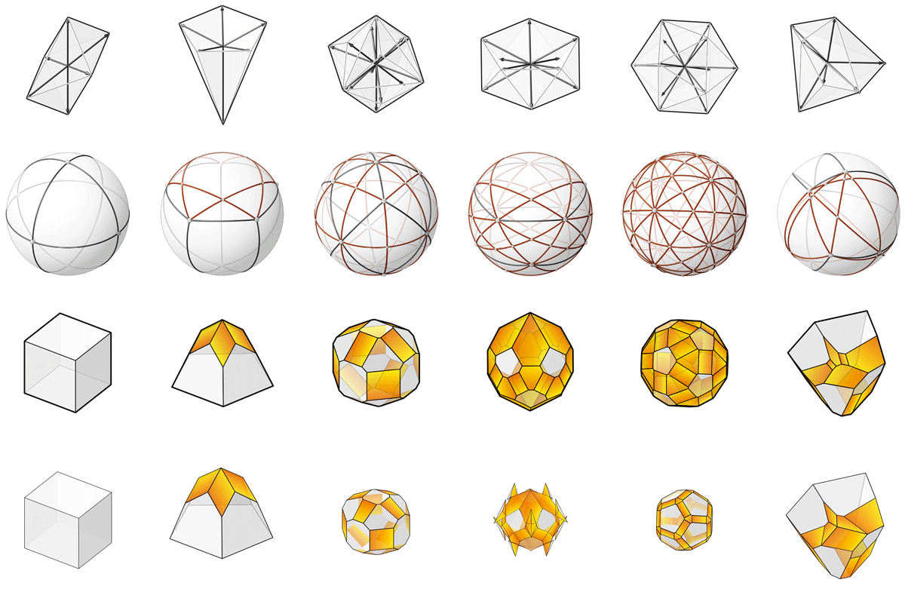

Constructor
Background
Computation of polyhedral geometry, or more commonly known as polyhedral reconstruction in the literature, is a well-researched topic for a variety of applications in many disciplines, such as computer vision, computational geometry and combinatorics. In most applications, the objective is to reconstruct the polyhedral geometry from partial information about the polyhedra (i.e. from projected images, vertex locations, edge lengths, face geometries, face normals, face areas, dihedral angles, etc.) (1). The polyhedral reconstruction method that is most relevant to 3D graphic statics is the one based on face normals and areas.
The theory of polyhedral reconstruction from its face normals and areas, or modifying the polyhedral geometry with target face areas, originate from Minkowski’s theorem (2).
The iterative polyhedral reconstruction method of compas_3gs uses the Extended Gaussian Image (3) of polyhedral cells, and builds on the initial implementations by Little (4) and Moni (5).
For a detailed theoretical background and a technical overview of the implementation, please refer to 6.
By modifying the target normal vectors and face areas, this method can be used to construct global force polyhedrons that address various site condition constraints. For more examples, please refer to 6 and 7.
{kind=link}
Example
{kind=link}
from __future__ import absolute_import
from __future__ import print_function
from __future__ import division
import compas
from compas.geometry import add_vectors
from compas.geometry import centroid_points
from compas.geometry import midpoint_point_point
from compas.geometry import subtract_vectors
from compas_rhino.utilities import draw_labels
from compas_rhino.utilities import draw_lines
from compas_3gs.algorithms import egi_from_vectors
from compas_3gs.algorithms import cell_planarise
from compas_3gs.algorithms import cell_from_egi
from compas_3gs.rhino import draw_egi_arcs
from compas_3gs.rhino import MeshConduit
from compas_3gs.utilities import get_index_colordict
try:
import rhinoscriptsyntax as rs
except ImportError:
compas.raise_if_ironpython()
__author__ = 'Juney Lee'
__copyright__ = 'Copyright 2019, BLOCK Research Group - ETH Zurich'
__license__ = 'MIT License'
__email__ = 'juney.lee@arch.ethz.ch'
# ------------------------------------------------------------------------------
# 1. get force vectors
# ------------------------------------------------------------------------------
lines = rs.GetObjects("Select force vectors in equilibrium", preselect=True, filter=rs.filter.curve)
origin = rs.GetPoint("Pick origin")
midpts = {}
vectors = {}
target_areas = {}
for index, line in enumerate(lines):
sp = rs.CurveStartPoint(line)
ep = rs.CurveEndPoint(line)
mp = midpoint_point_point(sp, ep)
mag = rs.CurveLength(line)
midpts[index] = mp
vectors[index] = subtract_vectors(ep, sp)
target_areas[index] = mag
# ------------------------------------------------------------------------------
# 2. egi
# ------------------------------------------------------------------------------
egi = egi_from_vectors(vectors, origin)
egi_vertex_colordict = {}
for vkey in egi.vertex:
color = (0, 0, 0)
if egi.vertex[vkey]['type'] == 'zero':
color = (255, 0, 0)
egi_vertex_colordict[vkey] = color
# draw egi vertex labels and edgees as arcs
rs.AddLayer('egi')
egi.draw_vertexlabels(color=egi_vertex_colordict)
draw_egi_arcs(egi)
# pause
rs.EnableRedraw(True)
rs.GetString('EGI created ... Press Enter to generate unit cell ... ')
# ------------------------------------------------------------------------------
# 3. unit polyhedron
# ------------------------------------------------------------------------------
rs.AddLayer('cell')
cell = cell_from_egi(egi)
cell.draw_faces(color=egi_vertex_colordict)
# pause
rs.EnableRedraw(True)
rs.GetString('Zero faces are shown in red ... Press Enter to arearise cell faces ...')
# ------------------------------------------------------------------------------
# 4. arearise cell faces
# ------------------------------------------------------------------------------
# conduit
conduit = MeshConduit(cell)
def callback(cell, k, args):
if k % 10:
conduit.redraw()
# set targets for zero faces
for fkey in cell.faces():
if fkey not in target_areas:
target_areas[fkey] = 0
# set target normals
target_normals = {}
for fkey in cell.faces():
target_normals[fkey] = egi.vertex[fkey]['normal']
collapse_edge_length = rs.GetReal("Collapse edge length?", number=0.1)
egi.clear()
cell.clear()
with conduit.enabled():
cell_planarise(cell,
kmax=2000,
target_areas=target_areas,
target_normals=target_normals,
collapse_edge_length=collapse_edge_length,
callback=callback,
print_result_info=True)
# ------------------------------------------------------------------------------
# 5. draw results
# ------------------------------------------------------------------------------
rs.HideObjects(lines)
# get index colors
colordict = get_index_colordict(vectors.keys())
# draw initial vectors and target areas
input_vector_labels = []
input_vectors = []
for i in vectors:
label = 'target : ' + str(round(target_areas[i], 5))
input_vector_labels.append({'pos' : midpts[i],
'text' : label,
'color': colordict[i]})
input_vectors.append({'start': list(origin),
'end' : add_vectors(origin, vectors[i]),
'color': colordict[i],
'arrow': 'end'})
draw_labels(input_vector_labels)
draw_lines(input_vectors)
# diaplay final cell face areas
final_face_labels = []
for fkey in vectors:
label = str(round(cell.face_area(fkey), 5))
pos = centroid_points(cell.face_coordinates(fkey))
final_face_labels.append({'pos': pos,
'text': label,
'color': colordict[fkey]})
draw_labels(final_face_labels)
# draw cell geometry
for fkey in target_areas:
if target_areas[fkey] != 0:
cell.draw_faces(keys=[fkey])
Note
As implemented, the method is optimised for convex polyhedral cells, and may not converge to stable solutions when there are multiple parallel force vectors present.
References
- 1
Demaine, E. D. and J. O’Rourke (2007). Geometric Folding Algorithms: Linkages, Origami, Polyhedra, Chapter 23, pp. 339–357. Cambridge University Press.
- 2
Alexandrov, A. (2005). Convex Polyhedra (1st ed.). Springer Monographs in Mathematics. Springer-Verlag Berlin Heidelberg.
- 3
Horn, B. K. P. (1984). Extended Gaussian images. In Proceedings of the IEEE 72(2), 1671–1686.
- 4
Little, J. J. (1983). An iterative method for reconstructing convex polyhedra from external guassian images. In Proceedings of the 1983 Association for the Advancement of Artificial Intelligence (AAAI), pp. 247–250.
- 5
Moni, S. (1990). A closed-form solution for the reconstruction of a convex polyhedron from its extended gaussian image. In Proceedings of the 10th International Conference on Pattern Recognition, Volume 1, pp. 223–226.
- 6(1,2)
Lee, J., T. Van Mele, and P. Block (2018). Disjointed force polyhedra. Computer-Aided Design 99, 11 – 28.
- 7
Lee J. (2018). Computational Design Framework for 3D Graphic Statics. PhD thesis, ETH Zurich, Zurich, Switzerland.